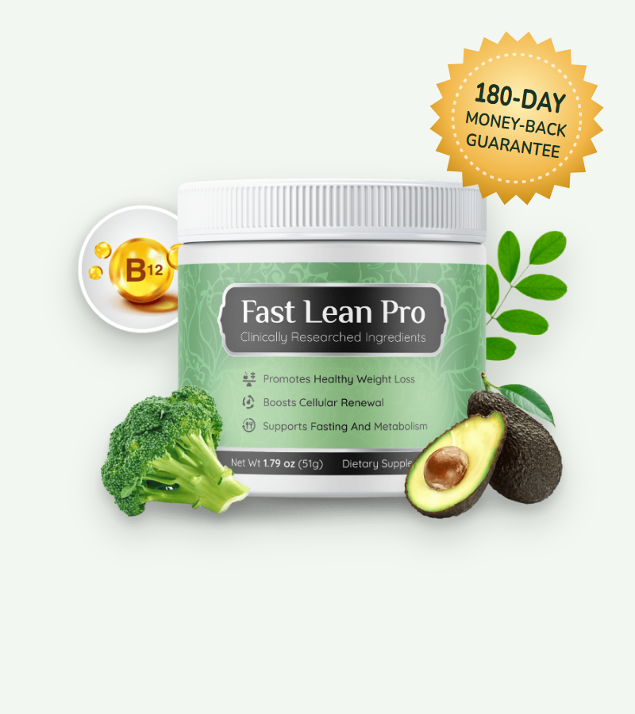
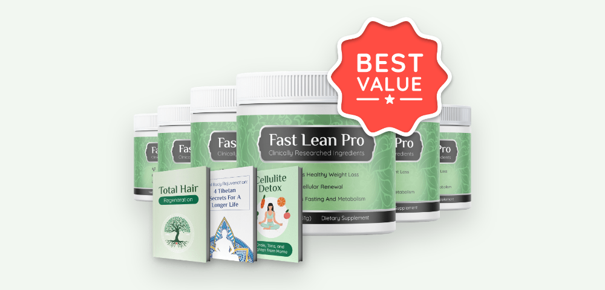
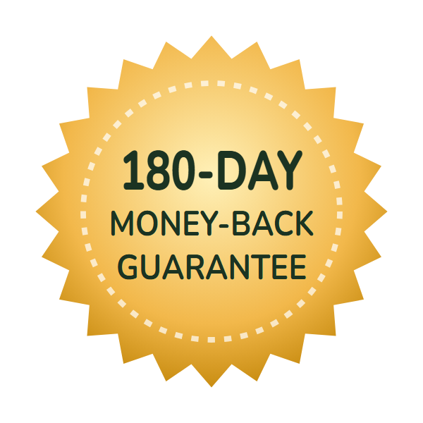

Blood Sugar & Cravings
Chromium and soluble fiber may help steady blood sugar after meals, which can reduce cravings.*
What's inside Fast Lean Pro, whether a powder can really “switch on” fasting, and how to buy Fast Lean Pro at the lowest price

Fast Lean Pro is a tasteless powder sold online with a bold promise: it "tricks your brain into thinking you are fasting," so you can get the benefits of intermittent fasting without skipping meals. Each 51 g jar is stirred into water, tea or coffee once a day.
In this Fast Lean Pro review we look at the ingredients the seller names, what research says about fasting, autophagy and each ingredient, who should avoid it, and the current Fast Lean Pro discount packages on the official website.
Fast Lean Pro is a dietary supplement powder in a 1.79 oz (51 g) jar with a green label that reads "Clinically Researched Ingredients — Promotes Healthy Weight Loss, Boosts Cellular Renewal, Supports Fasting and Metabolism." It's sold through its own sales page with checkout by BuyGoods.
The sales story, headlined "Japanese Scientists Discover 'Fasting Switch'," says that when you go without food the body switches on fat burning and autophagy — a process where cells recycle worn-out parts — and that Fast Lean Pro's ingredients can "trick your brain into thinking you are fasting" no matter what or when you eat.
The page names six ingredients but doesn't show a supplement facts label, and its own FAQ refers to "eleven powerful natural ingredients," so the exact formula and amounts aren't public.
Fast Lean Pro is a supplement, not a weight loss drug, and its claims haven't been evaluated by the FDA.
Chromium and soluble fiber may help steady blood sugar after meals, which can reduce cravings.*
Fibersol-2 is a soluble fiber linked in studies to feeling fuller and slightly lower after-meal glucose.*
Polyamines such as spermidine trigger autophagy in lab and animal studies — the basis of the "fasting switch" claim.*
Intermittent fasting does help many people lose weight, but research shows the main reason is simple: eating fewer calories. Studies comparing fasting with ordinary calorie cutting usually find similar weight loss.
Autophagy is real and important, but it's hard to measure in people, and no study has shown a supplement producing fasting-level autophagy in humans. So the "fasting without fasting" idea is a marketing framing rather than an established effect.
The six Fast Lean Pro ingredients named on the official sales page. Amounts per serving are not published.
| Ingredient | What it is | What the seller says |
|---|---|---|
| Niacin (vitamin B3) | B vitamin; NAD+ precursor | Keeps energy high, supports fat metabolism |
| Vitamin B12 | B vitamin | Supports skin renewal, helps calorie burning |
| Chromium | Trace mineral | Insulin rebalancing, supports autophagy |
| Fibersol-2 | Resistant maltodextrin (soluble fiber) | Full-body rejuvenation, adds good gut bacteria |
| Sukre | Branded ingredient — composition not explained | Speeds calorie burning, liver support |
| Biogenic Polyamine Complex | Likely spermidine-type polyamines | Fat breakdown, cell renewal |
The page's FAQ refers to eleven ingredients; the remaining ones are not named. No supplement facts label is shown on the sales page.
Two points stand out. First, vitamins B3 and B12 only affect energy and metabolism meaningfully if you're low in them — extra B12 doesn't burn calories in people with normal levels. Second, "Sukre" is a trade name we couldn't verify, and the polyamine complex isn't described in detail.
Our take: the most useful ingredients on paper are the soluble fiber and chromium. Without a label we can't tell whether the doses are close to what research uses.
| Ingredient | Typical studied dose | Evidence for weight or appetite |
|---|---|---|
| Fibersol-2 (resistant maltodextrin) | 5–10 g with meals | Modest reductions in after-meal glucose and more fullness in small trials |
| Chromium picolinate | 200–1,000 mcg | Reviews: about 0.5 kg more weight loss than placebo — small |
| Spermidine (polyamines) | 1–6 mg | Autophagy in animals; small human trials on memory, not weight |
| Niacin | 14–16 mg (daily need) | No weight loss effect unless deficient |
| Vitamin B12 | 2.4 mcg (daily need) | Low B12 is linked to obesity, but supplements don't cause weight loss |
| Sukre | Unknown | No published research we could find |
Fibersol-2 is the ingredient with the most relevant human research, but studies typically use 5 to 10 grams per serving. A 51 g jar meant to last about a month holds less than 2 grams per day of total powder, so any single ingredient is present in much smaller amounts.
The "scientific references" on the sales page are mostly news stories about fasting monks — including an article about a yogi who supposedly lived 76 years without food — rather than studies on the formula.
The testimonials ("I never had to give up a single cheesecake") can't be verified and aren't typical-results data.
If the idea of fasting appeals to you, it's worth knowing what research says about the real thing — it may work better than any powder.
In trials, intermittent fasting typically leads to 3–8% weight loss over several months — about the same as daily calorie cutting. Its main advantage is that some people find it easier to stick to.
People with diabetes on insulin or sulfonylureas, anyone with a history of eating disorders, pregnant or breastfeeding women and people under 18 should not fast without medical supervision.
Possible benefits based on the named ingredients.*
Fibersol-2 adds soluble fiber, which can support fullness and regularity.*
Chromium and fiber may slightly smooth after-meal blood sugar.*
A tasteless powder that mixes into coffee, tea or water.
Helpful if your diet is low in niacin or B12.*
Combining Fast Lean Pro with a simple eating window, more protein and daily walking gives you the best chance of seeing a difference within the guarantee period.
The named Fast Lean Pro ingredients are common in foods and supplements and are generally well tolerated.
Fast Lean Pro wraps a simple fiber, vitamin and mineral powder in an appealing "fasting without fasting" story. The ingredients are safe and familiar, but there's no evidence that the powder recreates the effects of fasting, and the missing label makes it impossible to compare doses with research.
If you like the idea of a daily drink mix, the 180-day guarantee gives you plenty of time to test it. For real fasting benefits, a simple 16:8 eating window — with or without Fast Lean Pro — is the proven approach.
Visit the Fast Lean Pro Official Website| Option | What it does | Typical cost | Evidence |
|---|---|---|---|
| Fast Lean Pro | Fiber, vitamin and polyamine powder | $49–$79 a month | None on the product |
| Intermittent fasting (16:8) | Reduces eating window | Free | Good — similar to calorie cutting |
| Plain psyllium or resistant dextrin | Soluble fiber | $8–$15 a month | Good for fullness and blood sugar |
| Higher-protein diet | Fullness, muscle retention | Grocery cost | Strong |
| Prescription GLP-1 medicines | Appetite hormones | Varies | Strong; 10–20% weight loss |
Search for the Fast Lean Pro official website and you'll find review sites and look-alike pages. The seller says Fast Lean Pro is only sold through its own page. To get the genuine product and guarantee:
Each Fast Lean Pro jar is about a 30-day supply, covered by the 180-day money-back guarantee.
60-Day Supply · Basic
$79/jar
No bonuses
180-Day Supply (3 + 3)
$49/jar
+ 3 free bonus guides
90-Day Supply (2 + 1)
$69/jar
Most popular
Prices checked on the official order page on October 23, 2026 and may change. Bonuses with 6 jars: "Total Hair Regeneration," "Total Body Rejuvenation" and "Cellulite Detox." US delivery 5–7 working days; Canada shipping $15.95. One-time payment.
The Fast Lean Pro sale price comes from the bundles:
The "$1,074" and "$537" crossed-out totals are list prices rather than real past prices, so compare the per-jar cost instead.
Because the guarantee runs for 180 days, the 6-jar bundle carries less risk than it seems. Keep your BuyGoods receipt, and be cautious of other sites advertising bigger Fast Lean Pro discounts without the guarantee.


Every Fast Lean Pro order from the official website is covered by a 180-day money-back guarantee. The seller says that if you're not satisfied for any reason, you can write to them within 180 days and return what you haven't used for a full refund.
Order problems go to BuyGoods customer support; product questions go to the vendor through the contact form on the official site.
Try Fast Lean Pro Risk-FreeFast Lean Pro is a powdered dietary supplement sold for weight management. The seller says it contains niacin, vitamin B12, chromium, Fibersol-2 (a soluble fiber), an ingredient called Sukre and a biogenic polyamine complex, and that it supports the body's natural fasting and cell-renewal processes. Each jar holds 51 g of powder.
There is no published study showing that Fast Lean Pro, or any powder, recreates the effects of fasting. Fasting works mainly by reducing how much you eat. Some ingredients, like soluble fiber and chromium, have small effects on fullness and blood sugar, and polyamines such as spermidine are studied for autophagy, mostly in animals.
The sales page names six ingredients: niacin (vitamin B3), vitamin B12, chromium, Fibersol-2, Sukre and a biogenic polyamine complex. Its FAQ mentions eleven ingredients, and no supplement facts label with amounts is shown, so the full formula is not public.
On the official website Fast Lean Pro costs $158 for 2 jars plus $9.99 shipping, $207 for 3 jars and $294 for 6 jars with free shipping and three bonus guides. That works out to $79, $69 and $49 per jar.
The discount is built into the bundles: the price drops from $79 per jar for 2 jars to $49 per jar for 6 jars, which also includes free shipping and three e-book bonuses. We haven't seen separate coupon codes on the official page.
The seller says to mix the powder into a liquid such as water, and suggests tea or coffee. It is described as tasteless. Follow the serving size on your jar, since the sales page doesn't list it.
Fiber such as Fibersol-2 can cause gas or bloating at first. Niacin can cause skin flushing at higher doses, and chromium may lower blood sugar slightly. If you mix it into coffee, remember the caffeine. Talk to a doctor first if you take diabetes medicine or have liver disease.
No. The order page describes a one-time payment for the package you choose.
Fast Lean Pro has a 180-day money-back guarantee. The seller says you can write to them within 180 days and return what you haven't used for a full refund.
Buy Fast Lean Pro from the official website, where checkout is handled by BuyGoods and the 180-day guarantee applies. The seller says it is not sold in stores, and marketplace listings may not include the guarantee.
The seller recommends taking it for several months. Because no clinical trial exists, there is no reliable timeline. Track your weight and appetite for 8 to 12 weeks alongside diet changes, which is well within the 180-day guarantee.
Ask your doctor first if you take diabetes, cholesterol or thyroid medicine. Chromium can affect blood sugar, niacin can interact with cholesterol drugs, and fiber can change how some medicines are absorbed.
Get Fast Lean Pro for as little as $49 per jar on the 6-jar package with free shipping and three bonus guides — covered by a 180-day money-back guarantee.
Order Fast Lean Pro Now